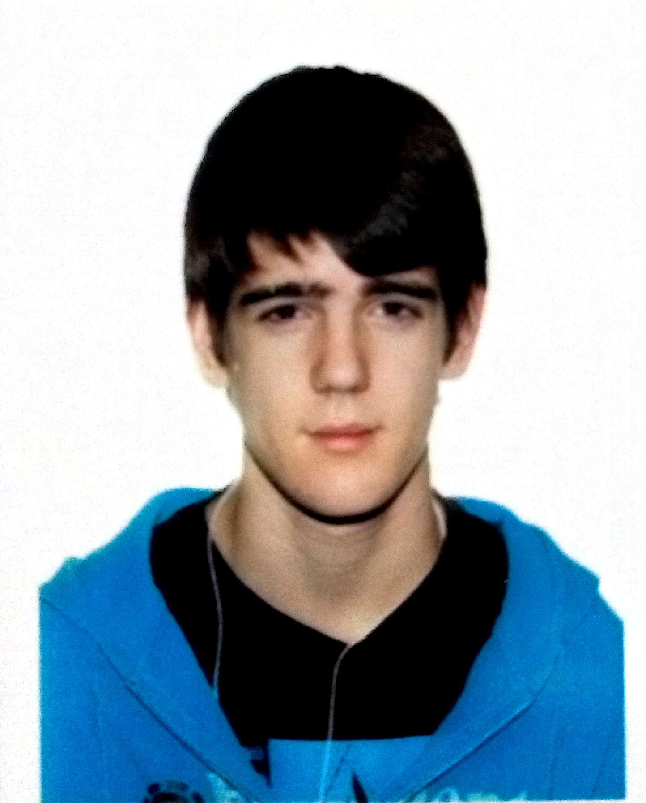

Andrés Herranz González
Contacto: andrhe01(a)ucm.es
Sobre mí:
Apasionado de la seguridad informática y el pentesting, obsesionado con la seguridad: ¡Nos están vigilando!. Me gustan los juegos de mesa y los juegos de rol. En mis ratos libres juego al baloncesto. Me gusta ayudar a la gente.

Axel Junestrand Leal
Contacto: axejunes(a)ucm.es
Sobre mí:
Me gusta recorrer el mundo en barco, he visitado más de 100 paises diferentes. Me gusta conocer gente y descubir culturas. Me apasiona la programación web sobre todo el diseño front end y el desarrollo de aplicaciones web y móvil.
Borja Lorenzo Fernández
Contacto: borjalor(a)ucm.es
Sobre mí:
Agregado diseñador gráfico, apasionado por la programación en todo tipo de lenguajes, me encanta diseñar y arreglar mis propias cosas. En mi tiempo libres me dedico a aprender, investigar y leer. Me encanta viajar, conocer gente y hacer nuevos amigos.

Guillermo Rius García
Contacto: grius(a)ucm.es
Sobre mí:
Interesado en la BIG DATA y el machine learning, dedico mis horas al desarrollo de algoritmos inteligentes, me gusta el internet de las cosas (IOT) sobretodo si la puedo relacionar con los coches: Mi gran pasión. Amante de la velocidad y los coches rápidos.